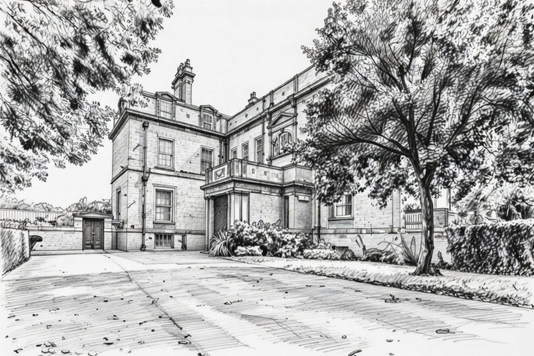
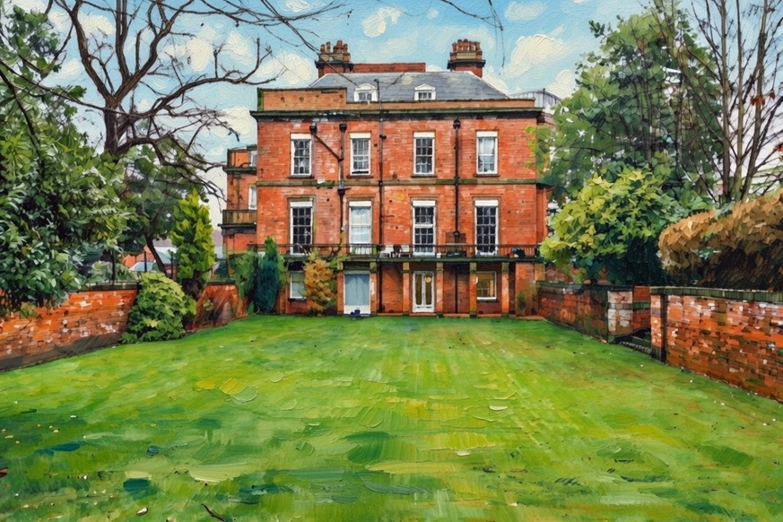

Holt House Sefton Park
Holt House is a striking Grade II-listed Victorian villa located at 54 Ullet Road, on the northern edge of Sefton Park
in the Aigburth/Greenbank area of south Liverpool (L17 postcode). Built around the late 19th century (c. 1870s–1890s)
as a finely detailed residence, it was originally the home of Sir Robert Durning Holt (1832–1908), a
prominent Liverpool merchant, shipowner, and philanthropist who served as the city's first Lord Mayor
in 1893–1894. The house stands as a notable example of late Victorian architecture, with attached garden
walls contributing to its historic character, and it forms part of the prestigious residential perimeter
surrounding the grand public Sefton Park (opened in 1872).


The Holt family in this context belongs to the influential Liverpool shipping and merchant dynasty, often referred to as the "Holt of Sefton Park" branch in genealogical records (e.g., 1894 Burke's Landed Gentry), which claimed descent from the ancient Lancashire Holts of Gristlehurst. Sir Robert Durning Holt was a key figure in this line—part of the broader family that included Alfred Holt (founder of the Blue Funnel Line shipping company) George Holt (associated with Lamport & Holt Line and Sudley House). Sir Robert resided at Holt House during his prominent civic career, and the property reflects the wealth and status of Liverpool's mercantile elite in the late Victorian era.During World War I, the house served as an auxiliary hospital. In more recent decades, it has been sensitively converted into prestigious apartments (now a sought-after residential block with features like open-plan layouts, duplex units, and communal access), while preserving its historic facade and interiors. Today, individual flats in Holt House occasionally appear on the market or for rental, valued for their location near Sefton Park's green spaces, boating lake, and Palm House.